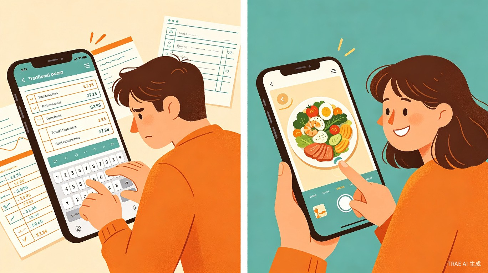
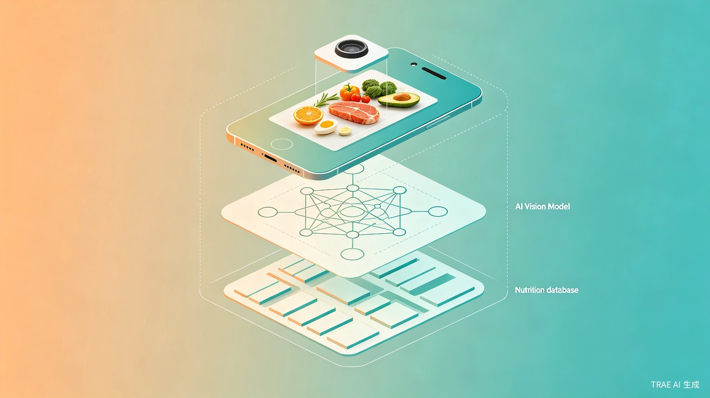
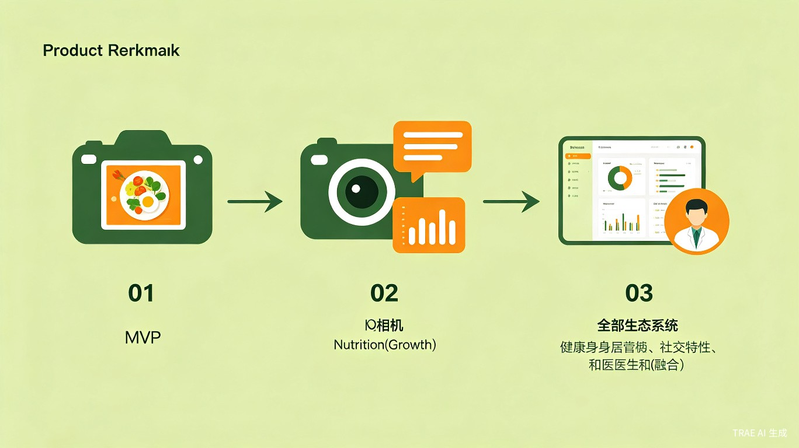

食分准 — AI 拍照式智能饮食记录
拍一张照，秒级完成饮食记录。基于豆包多模态大模型的视觉识别与分量估算，让健康管理零门槛、无压力。
创意背景与灵感来源
随着居民健康意识的持续提升，饮食管理已成为越来越多人的日常需求。然而，市面上的主流饮食记录工具在体验层面仍存在显著短板，导致用户难以长期坚持。本创意源自对现有产品（如"蚂蚁阿福"等）的深度使用体验，结合 AI 多模态技术的前沿进展，提出了一种全新的解决方案。
在技术选型上，MVP 阶段选择接入豆包通用多模态 API，依托其成熟的视觉理解能力快速实现菜品识别与分量估算。这一策略既规避了从零训练视觉模型的高昂成本与长周期，又能以最低成本验证用户需求，快速落地产品原型。
市场痛点分析
当前饮食记录领域存在两大核心痛点，严重制约了产品的用户留存和实际价值：

痛点一：记录流程繁琐，用户心理负担重
主流产品大多需要用户手动搜索菜品名称、输入食物重量，单次记录耗时 2-3 分钟。操作过程刻板，像完成打卡任务，容易产生抵触情绪。数据显示，超过 70% 的饮食记录类 APP 用户在首月内流失，漏记、断更是常态。
痛点二：AI 识别流于表面，数据参考性弱
很多产品的拍照功能只能识别菜品名称，无法根据食物的实际分量动态计算营养成分。无论小半碗还是满满一盘西红柿炒鸡蛋，都按统一标准份输出热量，导致记录数据与实际摄入偏差极大，失去了参考价值。
现有方案
手动搜索 + 输入重量，单次 2-3 分钟；AI 仅识别菜名，不区分分量，数据偏差大
食分准方案
拍照即记录，秒级完成；AI 动态识别菜品 + 估算分量，数据精准可靠
目标用户与使用场景
核心用户画像
健身人群
减脂增肌的健身爱好者，需要精确追踪每日蛋白质、碳水和脂肪的摄入量，辅助训练效果最大化。
慢病管控人群
需控糖、控嘌呤的糖尿病或痛风患者，需要实时了解每餐的营养成分，避免禁忌食物的过量摄入。
健康爱好者
关注膳食均衡的普通用户，希望了解日常饮食结构是否合理，培养科学的饮食习惯。
特殊饮食需求者
孕期、术后康复等有特殊营养要求的用户，需要针对性地监控特定营养素的摄入情况。
典型使用场景
食分准的核心场景是餐前、餐中的即时记录。用户在用餐时随手拍下餐食，系统自动完成菜品识别、分量估算和营养计算，全程无需手动输入。整个过程自然融入用餐流程，不需要专门抽出时间操作，真正实现"边吃边记"。
产品核心功能
功能一：AI 拍照识别
用户打开 APP 对准餐食拍照，系统通过豆包多模态 API 进行视觉分析，自动识别菜品名称、食材组成和烹饪方式。支持一餐多菜的批量识别，一次拍照即可完成整桌菜品的记录。
功能二：智能分量估算
区别于传统产品仅识别菜名的浅层能力，食分准通过视觉模型对食物在画面中的占比、容器大小等线索进行分析，动态估算每道菜的实际分量，从而计算出更接近真实摄入的营养数据。
功能三：营养数据看板
自动汇总每日热量、蛋白质、碳水、脂肪、膳食纤维、维生素等核心营养素的摄入情况，以直观的图表形式呈现。支持按日、周、月维度查看趋势变化，帮助用户清晰掌握饮食全貌。
功能四：AI 饮食建议
基于用户的营养摄入数据和健康目标，AI 助手以自然对话的方式提供个性化饮食建议。例如："今天的蛋白质摄入偏低，晚餐建议增加一份鸡胸肉或豆腐。" 交互方式类似聊天，降低使用门槛。
功能五：健康目标追踪
用户可设定个人健康目标（如每日热量上限、蛋白质最低摄入等），系统实时追踪进度并在接近阈值时温和提醒，帮助用户养成科学的饮食习惯。
技术方案与架构

核心架构
食分准采用前后端分离的移动端架构，核心流程为：拍照 → 多模态 API 识别 → 营养计算 → 数据存储 → 可视化呈现。
flowchart LR
A[用户拍照] --> B[图像预处理]
B --> C[豆包多模态 API]
C --> D[菜品识别 + 分量估算]
D --> E[营养数据库匹配]
E --> F[营养数据计算]
F --> G[数据持久化存储]
G --> H[可视化看板展示]
G --> I[AI 饮食建议生成]
关键技术选型
| 技术模块 | 技术方案 | 选型理由 |
|---|---|---|
| AI 视觉识别 | 豆包通用多模态 API | 成熟的视觉理解能力，支持菜品识别与分量估算，无需自训练模型 |
| 移动端框架 | Flutter / React Native | 跨平台开发，一套代码覆盖 iOS 与 Android，降低开发成本 |
| 后端服务 | Node.js / Python FastAPI | 轻量高效，适合 MVP 阶段快速迭代 |
| 数据库 | PostgreSQL + Redis | 关系型数据持久化 + 缓存加速，保障查询性能 |
| 营养数据库 | 中国食物成分表 API | 权威数据来源，覆盖常见中式菜品的营养成分 |
MVP 阶段技术策略
MVP 阶段的核心策略是最小化自研、最大化复用。视觉识别完全依赖豆包 API，营养数据采用权威公开数据库，移动端使用跨平台框架快速搭建。这一策略确保在 2-3 个月内即可完成首个可用版本的上线，以最低成本验证产品假设。
竞品对比分析
食分准与市面主流饮食记录产品的核心差异在于：不仅识别"是什么"，更精准估算"吃了多少"。
| 对比维度 | 薄荷健康 | 蚂蚁阿福 | MyFitnessPal | 食分准 |
|---|---|---|---|---|
| 记录方式 | 手动搜索 + 条码扫描 | 拍照识别（菜名） | 手动搜索 + 条码扫描 | 拍照识别（菜名 + 分量） |
| 单次记录耗时 | 2-3 分钟 | 30-60 秒 | 2-3 分钟 | < 5 秒 |
| 分量估算能力 | 需手动输入 | 无（标准份） | 需手动输入 | AI 动态估算 |
| 中式菜品覆盖 | 较好 | 一般 | 较弱 | 优秀（多模态识别） |
| AI 饮食建议 | 模板化建议 | 无 | 基础建议 | 个性化对话式建议 |
| 操作门槛 | 高 | 中 | 高 | 极低 |
价值与社会意义
效率提升
将单次饮食记录的时长从分钟级压缩至秒级，大幅降低操作成本。同时通过动态分量测算提升数据准确性，用自然交互弱化打卡的压迫感，让用户能更轻松、更清晰地掌握自身的饮食与营养状况。
社会价值
以低门槛、易坚持的工具形态，降低大众进行饮食健康管理的门槛。帮助更多人建立科学的膳食观念，推动健康生活方式的普及，逐步提升居民的健康饮食意识。尤其在慢病高发的当下，精准的饮食管理工具具有重要的公共卫生价值。
商业价值
饮食健康管理是高频刚需场景，用户粘性强、生命周期价值高。通过免费基础功能 + 高级增值服务（如深度营养分析报告、专业营养师咨询对接等）的商业模式，具备清晰的变现路径和可持续增长潜力。
MVP 路线图

Phase 1：核心验证期（第 1-3 个月）
- 接入豆包多模态 API，实现拍照识别菜品 + 分量估算
- 搭建基础营养数据库，完成热量与核心营养素计算
- 开发 Flutter 移动端 MVP，支持拍照记录与日汇总查看
- 邀请 100-200 名种子用户内测，收集反馈迭代
Phase 2：体验优化期（第 4-6 个月）
- 上线 AI 饮食建议功能，支持自然语言对话式交互
- 完善营养数据看板，增加周报、月报趋势分析
- 增加健康目标设定与追踪功能
- 优化中式菜品识别准确率，扩展菜品覆盖范围
Phase 3：生态扩展期（第 7-12 个月）
- 对接智能穿戴设备（手环、体脂秤），实现运动数据联动
- 上线社区功能，支持饮食打卡分享与经验交流
- 引入专业营养师咨询服务，构建增值服务体系
- 探索与医疗机构合作，为慢病患者提供饮食干预方案
gantt
title 食分准产品开发时间线
dateFormat YYYY-MM
axisFormat %m月
section Phase 1 核心验证
拍照识别 + 分量估算 :done, p1a, 2026-07, 3M
营养数据库搭建 :done, p1b, 2026-07, 2M
移动端 MVP 开发 :done, p1c, 2026-08, 2M
种子用户内测 :done, p1d, 2026-09, 1M
section Phase 2 体验优化
AI 饮食建议功能 :active, p2a, 2026-10, 2M
营养看板 + 趋势分析 :p2b, 2026-10, 2M
健康目标追踪 :p2c, 2026-11, 2M
菜品识别优化 :p2d, 2026-12, 1M
section Phase 3 生态扩展
穿戴设备对接 :p3a, 2027-01, 3M
社区功能上线 :p3b, 2027-02, 3M
营养师咨询服务 :p3c, 2027-03, 3M
医疗机构合作 :p3d, 2027-04, 3M
总结与展望
食分准瞄准饮食记录领域"记录难、数据不准"两大核心痛点，以AI 拍照识别 + 智能分量估算为突破口，将饮食管理从"繁琐任务"转变为"随手小事"。产品以豆包多模态 API 为技术底座，以极低的研发成本快速验证市场需求，具备清晰的迭代路径和商业化前景。
在社会价值层面，食分准以低门槛的工具形态降低大众健康管理的参与难度，推动科学膳食观念的普及。随着产品的持续迭代和生态扩展，有望成为连接个人健康管理与专业医疗服务的桥梁，为提升全民健康饮食意识贡献力量。